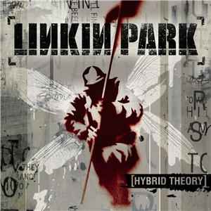

Hybrid Theory
Lanzado el 24 de octubre de 2000 por Warner Bros. Records
El primer �lbum de Linkin Park llamado Hybrid Theory fue lanzado el 24 de octubre
de 2000. Este disco le cost� a Linkin Park medio a�o de trabajo. Su productor fue
Don Gilmore. El disco tuvo un buen recibimiento por fan�ticos. El grupo vendi� m�s
de 4,8 millones de copias s�lo durante su a�o debut. El �lbum est� compuesto en
mayor�a por temas l�ricos que tratan los problemas que afectaron a Bennington
durante su adolescencia, incluso el abuso de drogas y alcohol, y el divorcio entre
padres.

El disco fue #2 en el U.S. Billboard 200 y ha alcanzado posiciones muy buenas e
importantes en el resto del mundo. La banda ha vendido alrededor de 24 millones
de copias en todo el mundo, y de esos, 10 millones de copias se han vendido s�lo
en Estados Unidos, haci�ndole el �lbum de mejor venta en el siglo XXI.
En el 2001, Linkin Park form� parte en el Ozzfest, en el que estuvieron muchos
artistas en gira, como Marilyn Manson, Slipknot, Crazy Town, Papa Roach, y Disturbed.
Fue una �poca en que Linkin Park recibi� muchas invitaciones para realizar giras de
alto perfil como por ejemplo en el reci�n mencionado Ozzfest, en el Family Values
Tour y en el KROQ Almost Acoustic Christmas. La banda inici� su propia gira llamada
Projekt Revolution, en la que participaron artistas invitados como Cypress Hill,
Adema, DJ Z-Trip, Xzibit, Mudvayne, Blindside y Snoop Dogg. Dentro de un a�o, Linkin
Park hab�a realizado m�s de 320 conciertos. Tambi�n en el 2001, el bajista Koziol
sale del grupo ya que vuelve Farrell.
Se hicieron muchos conciertos y giras en el mundo, hasta que en el propio autob�s
de la gira, la banda empez� a trabajar en un nuevo �lbum: Meteora.
| # | T�tulo | Duraci�n | |||
|---|---|---|---|---|---|
| 1. | "Papercut" | 3:05 | |||
| 2. | "One Step Closer" | 2:35 | |||
| 3. | "With You" | 3:32 | |||
| 4. | "Points of Authority" | 3:26 | |||
| 5. | "Crawling" | 3:25 | |||
| 6. | "Runaway" | 3:05 | |||
| 7. | "By Myself" | 3:09 | |||
| 8. | "In The End" | 3:36 | |||
| 9. | "A Place For My Head" | 3:09 | |||
| 10. | "Forgotten" | 3:14 | |||
| 11. | "A Cure For The Itch" | 2:37 | |||
| 12. | "Pushing Me Away" | 3:12 | |||
| Bonus tracks | |||||
| Edici�n japonesa | |||||
| 13. | "My December" | 4:19 | |||
| 14. | "High Voltage" | 3:45 | |||
| 15. | "One Step Closer" (Video) | 2:55 | |||
| Edici�n iTunes | |||||
| 13. | "My December" | 4:22 | |||
| 14. | "High Voltage" | 3:47 | |||
| 15. | "Papercut" (En vivo desde la BBC1) | 3:47 | |||
Road to revolution (Machine Shop Recordings/Warner Bros. Records) es un pack compuesto de CD + DVD donde se incluyen 18 canciones de Linkin Park grabadas en vivo.
Copyright � 2009 All Rights Reserved. Please read the privacy-policy and Terms of Use